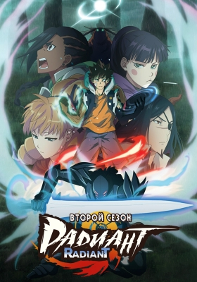

Аниме (['anʲɪmə, ənʲɪ'mɛ] ср., нескл., яп. アニメ (инф.) [anʲime], от англ. animation «анимация») — японская анимация. В отличие от мультфильмов других стран, предназначенных в основном для просмотра детьми, бо́льшая часть выпускаемого аниме рассчитана на подростковую и взрослую аудитории, и во многом за счёт этого имеет высокую популярность в мире. Аниме отличается характерной манерой отрисовки персонажей и фонов. Издаётся в форме телевизионных сериалов, а также фильмов, распространяемых на видеоносителях или предназначенных для кинопоказа. Сюжеты могут описывать множество персонажей, отличаться разнообразием мест и эпох, жанров и стилей. Источниками для сюжета аниме-сериалов чаще всего являются: манга (японские комиксы), ранобэ (лайт-новел) или компьютерные игры (как правило, в жанре «визуальный роман»). При экранизации обычно сохраняется графический стиль и другие особенности оригинала. Реже используются другие источники, например, произведения классической литературы. Есть также аниме, имеющие полностью оригинальный сюжет (в этом случае уже само аниме может послужить источником для создания по нему книжных и манга-версий). Значение термина «аниме» может варьироваться в зависимости от контекста. В западных странах аниме является объектом исследования учёных-культурологов, социологов и антропологов.

История аниме берёт начало в XX веке, когда японские кинорежиссёры начинают первые эксперименты с техниками мультипликации, изобретёнными на Западе. Старейшая из известных сохранившихся японских анимаций — «Katsudo Shashin» длится всего 3 секунды. Одним из самых первых аниме стал продемонстрированный в 1917 году двухминутный комедийный фильм «Namakura-gatana, в котором самурай собирается испытать свой новый меч, но терпит поражение от горожанина. Первопроходцами в области японской мультипликации стали Симокава Отэн, Дзюнъити Коти и Сэитаро Китаяма. Одним из наиболее популярных и доступных методов на тот момент была техника вырезной анимации, её применяли такие аниматоры, как Санаэ Ямамото, Ясудзи Мурата и Ноборо Офудзи. Позднее распространилась также техника аппликационной анимации.
Анимация Японии отличается от анимации других стран, в первую очередь, тем, что представляет собою развивающийся замкнутый культурный пласт, включающий в себя множество уникальных сюжетных и идейных символов, шаблонов, стереотипов и типажей. Простейшими примерами могут служить специфические для аниме жанры, вроде меха, живущие по своим собственным законам, или находящие частое отражение в аниме элементы японской культуры. Аниме выделяется среди мультипликации других стран своей востребованностью в японском обществе. Это обуславливает и общая направленность определённой доли произведений на более взрослую аудиторию, что выражается в большем внимании к философской и идеологической составляющим, преобладании «взрослых» мотивов в тематике, и, в том числе, меньшей табуированностью тем секса и насилия в культуре в целом. Большая часть аниме создаётся с расчётом на конкретную, временами довольно узкую целевую аудиторию. Критериями деления могут являться пол, возраст, психологический тип зрителя. Выбранный таким образом метажанр задаёт общую направленность произведения, влияя на его сюжет, идеи и даже манеру изображения. Детское (кодомо) аниме составляет большую часть от всей анимационной продукции, выпускаемой на территории Японии, но за пределами страны популярны более «взрослые» произведения.